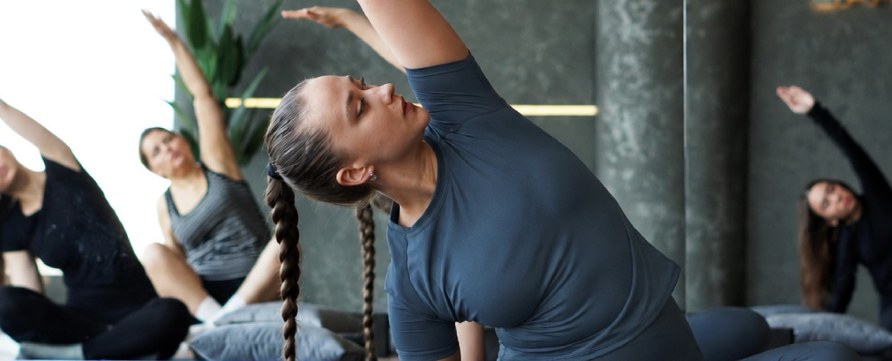

Кому подойдёт
Если хотите сочетать физическую практику с упражнениями на равновесие и концентрацию.
Как проходит занятие
На занятии осваивают позы, удерживают равновесие и уделяют внимание дыханию. На 1 Мая начальная группа занимается 55 минут, продвинутая — 90 минут.
Занятия в студиях
Северная, 324А
Уточните у администратора условия посещения и ограничения перед первым занятием.
1 Мая, 188
Описание · 1 Мая
(начальная группа - 55 мин) (продвинутая группа - 90 мин)
Практика, которая помогает привести тело и внутреннее состояние в гармонию через асаны, дыхание и осознанную работу с телом. На тренировке вы освоите базовые позы в комфортном темпе, укрепите глубокую мускулатуру, улучшите гибкость и подвижность, а также научитесь лучше чувствовать и понимать своё тело. Регулярные занятия помогают снять мышечное и эмоциональное напряжение, обрести лёгкость и внутренний баланс. Одежда: лосины, футболка, носочки.
Противопоказания · 1 Мая
острые инфекционные и воспалительные заболевания, повышенная температура. Недавние операции и травмы без разрешения врача. Острые боли в позвоночнике и суставах. Обострение заболеваний опорно-двигательного аппарата.
Серьёзные сердечно-сосудистые заболевания, при которых противопоказана физическая нагрузка. Выраженные нарушения равновесия и координации, препятствующие безопасному выполнению асан. Беременность. Любые состояния, при которых врач рекомендовал временно исключить физическую активность. Межпозвоночные грыжи и протрузии, особенно в период обострения.
Трудовой Славы, 6
Описание · Трудовой Славы
Практика, объединяющая физические упражнения, дыхательные техники и концентрацию внимания. Во время занятия выполняются асаны, направленные на развитие гибкости, силы, баланса и подвижности тела. Практика помогает снять мышечное напряжение, восстановить внутреннее равновесие и улучшить общее самочувствие.
- Развитие гибкости и подвижности суставов;
- укрепление мышц и улучшение осанки;
- развитие баланса и координации;
- снижение мышечного напряжения;
- улучшение контроля над дыханием и телом.
Одежда: удобная спортивная форма, носки или босиком.
Противопоказания · Трудовой Славы
острые инфекционные и воспалительные заболевания, повышенная температура. Острые боли в позвоночнике и суставах. Недавние операции и травмы без разрешения врача. Обострение хронических заболеваний опорно-двигательного аппарата. Неконтролируемая артериальная гипертензия и серьёзные сердечно-сосудистые заболевания. Выраженные нарушения вестибулярного аппарата. Беременность требует индивидуального подбора практики и согласования с врачом.